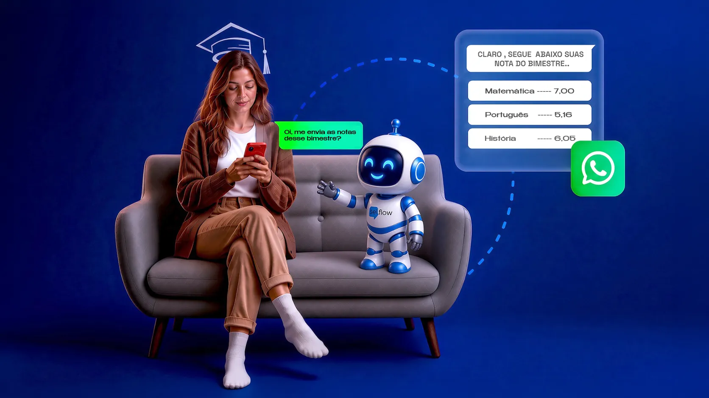
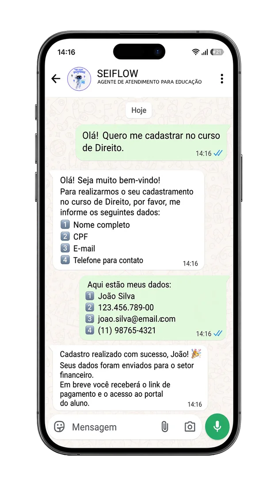
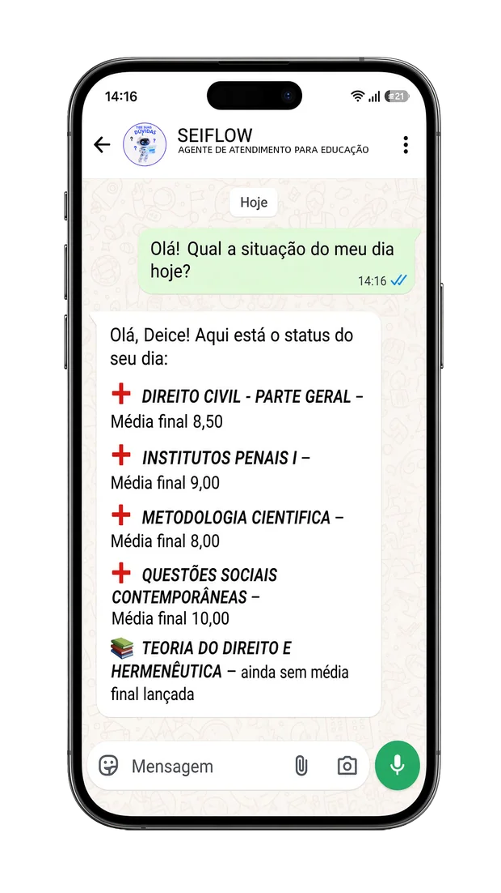
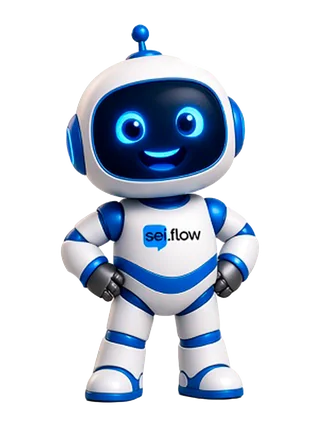
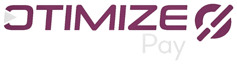
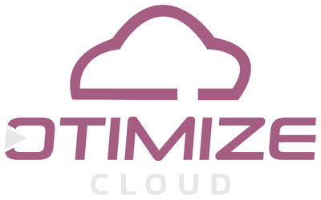

Educação básica
Secretaria, responsável, matrícula, calendário e mensalidade — o WhatsApp da escola deixa de ser plantão improvisado.
Vai muito além do chatbot tradicional. A Seiflow entende a solicitação, consulta a base da instituição e conecta-se ao seu ERP para executar o processo de verdade.


Atendimento inteligente 24 horas por dia, 7 dias por semana. Uma IA conectada à sua instituição, que atende e executa com segurança os processos do dia a dia.

Especializada em educação — não uma IA genérica
Secretaria, responsável, matrícula, calendário e mensalidade — o WhatsApp da escola deixa de ser plantão improvisado.
Notas, boletim, processo seletivo e estágio — com a base acadêmica da casa.
Cada unidade isolada, com a mesma operação. A direção vê volume, fila e custo — sem misturar dados.



Prova no WhatsApp da instituição
Resposta na hora, sem copiar e colar. O que exige gente sobe com o histórico — a direção acompanha tudo no painel.
“O aluno pergunta no WhatsApp. A secretaria responde quando dá. A experiência da instituição começa a falhar em silêncio.”
Não é menu de chatbot. A IA interpreta a solicitação, consulta a base da instituição e executa no ERP — ou transfere para a equipe certa, com o histórico.
Interpreta o que aluno, responsável ou candidato quer — notas, boleto, matrícula, curso — em linguagem natural.
Busca em documentos oficiais da Instituição e acessa o ERP. Nada inventado.
Conduz sozinho a conversa — inclusive gerando 2ª via ou orientando matrícula. O que pede atendimento humanizado sobe para a equipe com o histórico.
Agentes da instituição
Cada agente cobre uma função da instituição, treinado com os dados da instituição e conectado diretamente ao ERP.
Curso, calendário, matrícula, notas, boletim e procedimentos pedagógicos.
“Quando sai o boletim?”
Boletos, PIX, renegociação e status de pagamento — avisando o vencimento antes de perguntarem.
“Cadê o boleto deste mês?”
Regulamentos, políticas, horários da secretaria, estrutura e informações gerais.
“Qual o horário da secretaria?”
Do primeiro contato à matrícula: cursos, valores, processo seletivo e qualificação do lead.
“Quanto custa o curso de Administração?”
Perguntas frequentes
A pergunta não é quanto custa o Seiflow. É quanto custa a fila da secretaria continuar do jeito antigo.
Sim. Educação básica, faculdades e redes. O piloto começa em uma unidade, uma fila — secretaria, financeiro ou captação — e uma meta de primeira resposta.
O risco real é a fila da secretaria sem padrão. A IA opera só na base oficial da Instituição, com handoff humano e log completo — reduz erro de cansaço da equipe.
Ter WhatsApp ou um chatbot de menu é diferente de ter uma IA educacional conectada à gestão da instituição. A Seiflow entende linguagem natural e executa no ERP.
Não. Integrada ao ERP, ela também executa: emite 2ª via, orienta matrícula e avisa vencimentos antes de perguntarem.
Isolamento por unidade, papéis de acesso e rastro de uso. TI entra no desenho de permissões no primeiro dia do piloto.
Sim. Na educação básica, a IA gerencia o contato com pais e responsáveis para avisos, financeiro e rotina escolar. No ensino superior (faculdades e universidades), o Seiflow interage diretamente com o acadêmico, resolvendo solicitações de protocolo, datas de provas, 2ª via de boletos atrasados e orientações de matrícula integradas ao ERP acadêmico.
Ao identificar o CPF ou matrícula via WhatsApp, a IA consulta os débitos no ERP da instituição e envia instantaneamente a linha digitável, código Pix ou link para pagamento atualizado com multas e juros parametrizados.
Sim. Desenvolvido sobre infraestrutura em nuvem e a API oficial do WhatsApp, o Seiflow escala horizontalmente durante picos de início de semestre, absorvendo milhares de chamados simultâneos de alunos sem criar filas.
Ecossistema Edtech 360°
O Grupo Otimize-TI cuida de cada camada da sua instituição: o servidor que sustenta o sistema, a gestão acadêmica e financeira, o dinheiro que entra e a IA que atende o aluno — tudo integrado nativamente, sem depender de terceiros.
O ERP definitivo para instituições de médio e grande porte que buscam escala e lucratividade. Centraliza acadêmico, financeiro e secretaria em uma única interface robusta.

Automatiza o fluxo de caixa e reduz a inadimplência com tecnologia nativa.
A solução ideal para instituições que buscam agilidade e tecnologia de ponta sem precisar de uma equipe técnica própria. O SEI com suporte consultivo.
Muito além de um chatbot. O SEI Flow é um agente de IA Educacional, integrado nativamente ao banco de dados do seu ERP.

Infraestrutura de nuvem dedicada, desenhada para suportar o ecossistema SEI com máxima estabilidade.